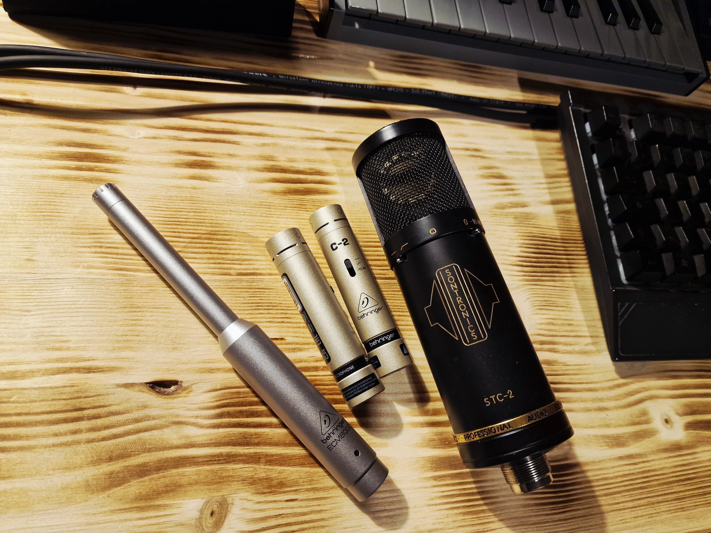

Microfoni a Condensatore

I microfoni a condensatore basano il loro funzionamento sulla variazione di capacità elettrica. Utilizzano una capsula formata da due piastre metalliche polarizzate elettricamente: un backplate fisso e un diaframma mobile estremamente sottile. Questa struttura leggerissima permette di catturare il suono con una precisione chirurgica e una sensibilità molto elevata, rendendoli lo standard per la registrazione di voci e strumenti acustici in studio.
| Vantaggi | Info Tecniche |
|---|---|
| Risposta in Frequenza Estesa | Catturano un range di frequenze molto ampio, in particolare le altissime frequenze. Questo garantisce la presenza della cosiddetta "aria" e di tutto il dettaglio fine dello strumento. |
| Alta Sensibilità | Generano un segnale elettrico in uscita molto più forte rispetto ai dinamici o ai nastri. Richiedono meno spinta (gain) dal preamplificatore, riducendo di conseguenza il rumore di fondo. |
| Risposta ai Transienti Rapida | La bassissima massa del diaframma permette al microfono di reagire in modo quasi istantaneo ai picchi sonori veloci (come l'attacco di una chitarra acustica o il tocco sui piatti della batteria). |
| Svantaggi | Info Tecniche |
|---|---|
| Necessità di Alimentazione | Per polarizzare la capsula e alimentare il circuito di preamplificazione interno, richiedono obbligatoriamente un'alimentazione esterna, tipicamente la Phantom Power (+48V) fornita dal mixer o dalla scheda audio. |
| Fragilità Ambientale | I diaframmi ultrasottili e l'elettronica interna sono particolarmente sensibili agli sbalzi di temperatura, all'umidità e, ovviamente, agli urti fisici. |
| Gestione SPL Inferiore | Rispetto a un dinamico, il diaframma di un condensatore può arrivare al suo limite di escursione più facilmente, generando distorsione se sottoposto a pressioni sonore estreme (motivo per cui spesso includono uno switch di attenuazione o "Pad"). |
Aneddoti e Informazioni Interessanti

Il Neumann U87 è considerato a livello globale il microfono a condensatore per eccellenza. Presente in quasi tutti gli studi di registrazione professionali del mondo, la sua risposta in frequenza bilanciata lo ha reso lo standard assoluto per la registrazione vocale dagli anni '60 ad oggi.
Un aspetto tecnico fondamentale nell'uso dei condensatori a diaframma largo per la voce è l'obbligo del filtro antipop (pop filter). Essendo questi microfoni estremamente sensibili, un colpo d'aria diretto causato dalla pronuncia delle consonanti occlusive (come la "P" o la "B") manderebbe il diaframma a fine corsa, creando un forte e fastidioso picco di basse frequenze irrecuperabile in fase di mixaggio.
Home